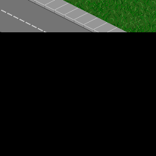

<html>
<!-- X: 4096 ---- 4162  -->
<!-- Y: 4096 ---- 4146  -->
<!--  -->
<!--  -->

<body>
    <style>
        img {
            display: inline;
        }

        .img_container {
            white-space: nowrap;
            cursor: grab;
        }
    </style>
    <div id="gooncity_tiles" class="img_container">
    </div>
    <script>
        const image_container = document.getElementById("gooncity_tiles");
        let all_images_gif = '';
        let all_images_png = '';
        for (let y = 4096; y <= 4146; y++) {
            for (let x = 4096; x <= 4162; x++) {
                all_images_gif += ``;
            }
            all_images_gif += "<br>"
        }
        image_container.innerHTML = all_images_gif;
    </script>
    <script>
        let isDragging = false; // flag to track whether the user is dragging
        let startY; // variable to store the starting Y position of the mouse
        let startX; // variable to store the starting Y position of the mouse

        window.addEventListener('mousedown', (event) => {
            isDragging = true; // the user has started dragging
            startY = event.clientY; // store the starting Y position of the mouse
            startX = event.clientX;
            image_container.style.cursor = 'grabbing';
        });

        window.addEventListener('mousemove', (event) => {
            if (isDragging) {
                const distanceY = startY - event.clientY; // calculate how far the mouse has moved
                const distanceX = startX - event.clientX; // calculate how far the mouse has moved
                window.scrollBy(distanceX, distanceY); // scroll the window by the distance moved
                startY = event.clientY; // update the starting Y position of the mouse
                startX = event.clientX; // update the starting X position of the mouse
            }
        });

        window.addEventListener('mouseup', (event) => {
            isDragging = false; // the user has stopped dragging
            startY = event.clientY; // update the starting Y position of the mouse
            startX = event.clientX; // update the starting X position of the mouse
            image_container.style.cursor = 'grab';
        });

        document.body.style.zoom = '100%';
        const ZOOM_SPEED = 5;
        function zoomInOut(val) {
            let zoom = parseInt(document.body.style.zoom) + val;
            zoom = Math.min(Math.max(5, zoom), 300);
            document.body.style.zoom = zoom + '%';
        }

        // let scrollPositionX, scrollPositionY;
        // window.addEventListener("wheel", (e) => {
        //     // console.log(e.deltaY);
        //     e.preventDefault();
        //     e.stopPropagation();
        //     scrollPositionX = window.scrollX;
        //     scrollPositionY = window.scrollY;
        //     const maxScrollX = Math.max( document.body.scrollWidth, document.body.offsetWidth, document.documentElement.clientWidth, document.documentElement.scrollWidth, document.documentElement.offsetWidth) - window.innerWidth;
        //     const maxScrollY = Math.max( document.body.scrollHeight, document.body.offsetHeight, document.documentElement.clientHeight, document.documentElement.scrollHeight, document.documentElement.offsetHeight) - window.innerHeight;
        //     const relativeScrollPosX = scrollPositionX / maxScrollX;
        //     const relativeScrollPosY = scrollPositionY / maxScrollY;

        //     zoomInOut(e.deltaY > 0 ? -ZOOM_SPEED : ZOOM_SPEED);

        //     const newMaxScrollX =  Math.max( document.body.scrollWidth, document.body.offsetWidth, document.documentElement.clientWidth, document.documentElement.scrollWidth, document.documentElement.offsetWidth) - window.innerWidth;
        //     const newMaxScrollY =  Math.max( document.body.scrollHeight, document.body.offsetHeight, document.documentElement.clientHeight, document.documentElement.scrollHeight, document.documentElement.offsetHeight) - window.innerHeight;


        //     window.scrollTo(newMaxScrollX*relativeScrollPosX, newMaxScrollY*relativeScrollPosY);
        // },{passive:false});
    </script>
</body>

</html>